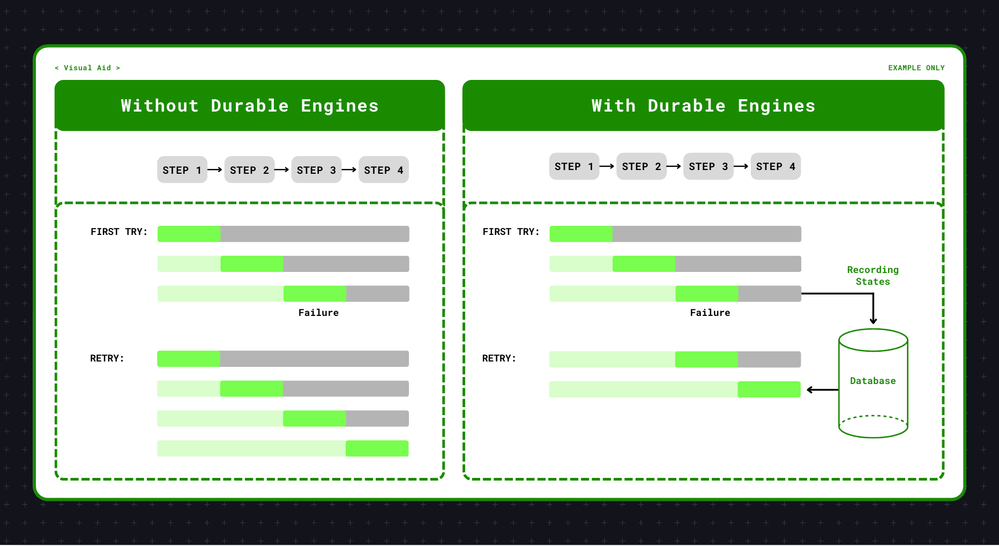

Blog

Published on Georgian AI Lab's Substack · April 2026
AI agents inherit all the failure modes of distributed systems — but make them far more expensive. In this piece, I explore why durable execution engines are becoming essential infrastructure for production agentic systems: persisting completed steps, recovering from failures mid-workflow, and ensuring your agent picks up exactly where it left off rather than starting from scratch. Using real examples from Netflix, quantitative trading, and financial services compliance, I break down what durable engines actually do, where they sit in the agentic stack, and when you truly need one — and when you don't.